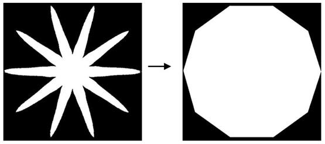

|
类型 |
特征 | ||||||||||||
|
描述 |
根据指定的变换类型，对区域或区域列表进行形状变换 | ||||||||||||
|
语法 |
ZV_ReShapeTrans(re,reTrans,type)
参数： re：ZVOBJECT类型，区域或区域列表，输入参数 reTrans：ZVOBJECT类型，形状变换后的区域或区域列表，类型与re相同，输出参数 type：区域变换类型,如下表
| ||||||||||||
|
适用控制器 |
支持ZV功能或者5系列以上的控制器 | ||||||||||||
|
例子 |
 ZVOBJECT img,mask,re ZV_ImgRead(img,"region5.png",0) '读取图片 ZV_ImgInfo(img,0)'获取图像基本信息 ZV_ReGenFullImage(img,mask) '生成全图区域掩膜 ZV_ReThresh(img,mask,re,200,255) '区域二值化
ZVOBJECT re_trans,dst ZV_ReShapeTrans(re,re_trans,0)'将区域变换成凸包区域 ZV_ImgGenReBin(re_trans,dst,TABLE(0),TABLE(1)) '区域转二值图 |